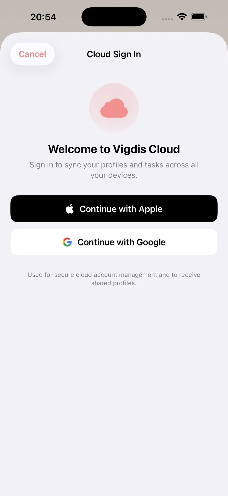

Hvernig á að kveikja á skýjasamstillingu
Skýjasamstilling deilir rútínunum þínum milli iPhone og iPad — og leyfir þér að deila prófíl með öðru foreldri. Þú þarft Multi-Family áskrift fyrir samstillingu á eigin prófílum.
-
1

Opnaðu Meira-flipann og finndu Ský-kaflann
Smelltu á Meira-táknið í neðri valstikunni. Skrunaðu niður þar til þú sérð Ský-kaflann með stöðu og innskráningarhnappi.
-
2

Smelltu á „Skrá inn í skýið“ og veldu innskráningu
Veldu Halda áfram með Apple eða Halda áfram með Google. Þú þarft ekki nýtt lykilorð — þú notar reikninginn sem er nú þegar á símanum.
-
3

Staðfestu að þú sért innskráð(ur)
Eftir innskráningu sérð þú netfangið þitt og núverandi áætlun (Free, Standard eða Multi-Family). Ef þú þarft að uppfæra býður Vigdís þér Multi-Family beint úr þessum skjá.
-
4

Kveiktu á „Sjálfvirkar skýjauppfærslur“
Aftur í Meira-flipanum, undir Ský, kveikir þú á rofanum. Vigdís samstillir strax og staðan sýnir „Síðast samstillt fyrir augnabliki síðan“. Þú getur slökkt aftur hvenær sem er.